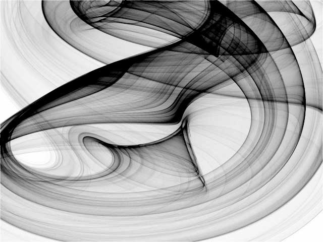

Nous avons tous entendu parler de la théorie du chaos, ou plus populairement appelée l’effet papillon. C’est l’une des seules théorie mathématique à être aussi connue.
Cette théorie a été découverte pour la première fois lors d’une conférence donnée en 1972 par Edward Lorenz, qui est le ”père” de la théorie du chaos. Elle est intitulée : "Prédictibilité : le battement d’ailes d’un papillon au Brésil provoque-t-il une tornade au Texas ? .
L’une des caractéristiques de cette théorie, c’est qu’elle est totalement transversale dans tous les domaines scientifiques, que ce soit la physique, l’astronomie, la biologie, l’économie ou les sciences sociales. Partout se trouvent ces systèmes dynamiques trop difficilement prévisibles : croissance ou décroissance de populations animales, répartition de capitaux et flux financiers, systèmes stellaires et planétaires.
Elle est aussi complètement redevable au développement de l’informatique. A la fois parce que les ordinateurs ont permis de visualiser simplement ces états chaotiques et qu’ils ont permis, grâce à leur puissance de calcul, d’expliquer certains phénomènes naturels sur lesquels les chercheurs s’arrachaient les cheveux et qui ont été résolus par la théorie du chaos. Un système chaotique n’est pas forcément complexe : un pendule ou une balançoire peuvent ainsi parfois montrer des comportements chaotiques.